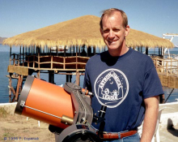

Please note: the AAS Obituaries are temporarily being hosted on this website while their full content is being ingested into the PubPub publishing platform newly adopted by the Bulletin of the American Astronomical Society. When the migration is complete, your existing links will take you to the final, migrated content. Contact peter.williams@aas.org with any questions.
Kenneth W. Willcox (1943-1999)
On February 26, 1999, exactly one year after the great Caribbean total eclipse of the Sun, astronomers were eclipsed by the untimely death of Kenneth Willcox. As his wife, Sara, put it, "There was an eclipse of the fun" when Ken lost his 11 year battle against cancer.
As a boy, Ken had always been fascinated by the stars, and he quickly became an accomplished amateur astronomer. That passion grew when he joined a local astronomy club. He was elected president of the Astronomy League (an amateur umbrella organization) in 1988 and served on the board of the Astronomical Society of the Pacific. He joined the AAS in 1993.
Ken witnessed his first total eclipse of the Sun in 1979. That event inspired him to collaborate with Mark Littmann on a comprehensive guide to eclipses in preparation for the event of 1991. The resulting book, TOTALITY: Eclipses of the Sun, has remained a popular reference on the subject. Willcox recently finished work on the second edition, which was published by Oxford University Press in June 1999. As much as he enjoyed observing and photographing eclipses, Willcox especially loved sharing that joy with others. Among the most dedicated of eclipse chasers, he organized and led five major expeditions to Hawaii (1991), Bolivia (1994), India (1995), Mongolia (1997), and Aruba (1998). He worked hard to make sure that every expedition member enjoyed the best eclipse experience possible. At the time of his death, Ken was busy planning an expedition to Turkey for the 1999 eclipse. Both the eclipse and the expedition took place as scheduled, but they were not the same without Ken.
Willcox was a frequent speaker in astronomy meetings, and he taught physics and astronomy classes at Bartlesville Wesleyan College. Visitors to the Willcox home were frequently invited out back to Ken's observatory where he delighted in showing off the latest comet, bright planets, or even just the moon.
Willcox was born in Bartlesville, Oklahoma in 1943 and lived there most of his life. He married Sara in 1963, and they raised two children. Willcox earned a BS in chemistry and math from Northeastern State University in 1965 and an MS in chemistry from North Dakota State University in 1974. He was employed at Phillips Petroleum in Bartlesville as a polymer chemist from 1974 until his death. I was first introduced to Ken in 1994 through a series of email and telephone conversations about our rival eclipse expeditions to Bolivia. By the time we met there, he felt like an old friend, an effect he had on many.
Ken loved to laugh, and he enjoyed regaling us with his past adventures. Once while leading his eclipse group in Bolivia, Ken was introduced to a local dignitary as the "President of NASA." Not wanting to embarrass his host, he signed his name as NASA's head man into a two hundred year old guest book already containing the signatures of many world leaders and royalty. Ken joked that the FBI might show up at any minute to arrest him for impersonating a government official.
Ken's affection for the people of Bolivia was so great that he returned there in 1995 with a gift of two large telescopes. He was hardly prepared for the official reception waiting for him as he was led across the large rotunda of Parliamentary Hall by the Mayor of Potosi, while a brass band played. When he realized that this pomp and circumstance was for him, he thought, "What have I got myself into! If they discover I'm just an Okie amateur astronomer, they're liable to lynch me!" Ken returned to Bolivia several more times to establish the Southern Skies Star Party. This event unites northern amateurs on an annual journey to discover the splendors of the southern heavens. His legacy lives on with SSSP-2000, the fifth annual event.
Ken's non-astronomical interests included his religion, scuba diving, time with Sara and his grandchildren, teaching Sunday school, flying a plane, swimming with whales, and ballooning with friends. He was always ready to try something new, and his enthusiasm was infectious. Ken Willcox touched the lives of everyone he met, and he is deeply missed. I wonder what the heavens must look like from Ken's side now.
Photo by Fred Espenak
Obituary written by: Fred Espenak (NASA's Goddard Space Flight Center)
BAAS Citation: BAAS, 2000, 32, 1695
SAO/NASA ADS Bibcode: 2000BAAS...32.1695E